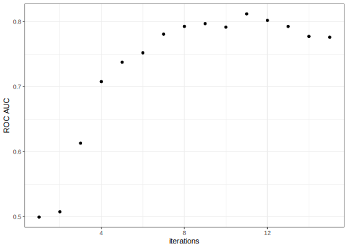

set.seed(123)
initial_validation_split(forested, prop = c(0.6, 0.2))
#> <Training/Validation/Testing/Total>
#> <4264/1421/1422/7107>Annotations
Introduction 1 - Introduction
👀
This page contains annotations for selected slides.
There’s a lot that we want to tell you. We don’t want people to have to frantically scribble down things that we say that are not on the slides.
We’ve added sections to this document with longer explanations and links to other resources.
Introduction 2 - Data Budget
Data splitting and spending
More about the initial data split can be found in Chapter 3 of Applied Machine Learning for Tabular Data (AML4TD).
In particular, a three-way split into training, validation, and testing set can be done via
What is set.seed()?
What does set.seed() do?
We’ll use pseudo-random numbers (PRN) to partition the data into training and testing. PRN are numbers that emulate truly random numbers (but really are not truly random).
Think of PRN as a box that takes a starting value (the “seed”) that produces random numbers using that starting value as an input into its process.
If we know a seed value, we can reproduce our “random” numbers. To use a different set of random numbers, choose a different seed value.
For example:
set.seed(1)
runif(3)
#> [1] 0.2655087 0.3721239 0.5728534
# Get a new set of random numbers:
set.seed(2)
runif(3)
#> [1] 0.1848823 0.7023740 0.5733263
# We can reproduce the old ones with the same seed
set.seed(1)
runif(3)
#> [1] 0.2655087 0.3721239 0.5728534If we don’t set the seed, R uses the clock time and the process ID to create a seed. This isn’t reproducible.
Since we want our code to be reproducible, we set the seeds before random numbers are used.
In theory, you can set the seed once at the start of a script. However, if we do interactive data analysis, we might unwittingly use random numbers while coding. In that case, the stream is not the same and we don’t get reproducible results.
The value of the seed is an integer and really has no meaning. Max has a script to generate random integers to use as seeds to “spread the randomness around”. It is basically:
cat(paste0("set.seed(", sample.int(10000, 5), ")", collapse = "\n"))
#> set.seed(9725)
#> set.seed(8462)
#> set.seed(4050)
#> set.seed(8789)
#> set.seed(1301)Introduction 3 - What Makes A Model?
What is wrong with this?
If we treat the preprocessing as a separate task, it raises the risk that we might accidentally overfit to the data at hand.
For example, someone might estimate something from the entire data set (such as the principle components) and treat that data as if it were known (and not estimated). Depending on the what was done with the data, consequences in doing that could be:
- Your performance metrics are slightly-to-moderately optimistic (e.g. you might think your accuracy is 85% when it is actually 75%)
- A consequential component of the analysis is not right and the model just doesn’t work.
The big issue here is that you won’t be able to figure this out until you get a new piece of data, such as the test set.
A really good example of this is in ‘Selection bias in gene extraction on the basis of microarray gene-expression data’. The authors re-analyze a previous publication and show that the original researchers did not include feature selection in the workflow. Because of that, their performance statistics were extremely optimistic. In one case, they could do the original analysis on complete noise and still achieve zero errors.
Generally speaking, this problem is referred to as data leakage. Some other references:
- Overfitting to Predictors and External Validation
- Are We Learning Yet? A Meta Review of Evaluation Failures Across Machine Learning
- Navigating the pitfalls of applying machine learning in genomics
- A review of feature selection techniques in bioinformatics
- On Over-fitting in Model Selection and Subsequent Selection Bias in Performance Evaluation
Introduction 4 - Evaluating Models
Brier score
The Brier score measures how close a model probability estimate is to its best possible value (i.e., zero or one).
In the best case, the model is perfect, and every prediction equals 0.0 or 1.0 (depending on the true class). In this case, the Brier score is zero.
When the model is uninformative and there are two classes, the worst-case values range from 0.25 to about 0.50. Imagine that the model predicts the same noninformative prediction of 50% (basically “¯\(ツ)/¯”). In that case, every prediction is either \((0.00 - 0.50)^2\) or \((1.00 - 0.50)^2\). The average of those is 0.25.
There are many different ways a model can be bad though, and some of these will produce Brier scores between 0.25 and 0.50.
Dangers of overfitting
See the “Overfitting” chapter of AML4TD for more information.
Where are the fitted models?
The primary purpose of resampling is to estimate model performance. The models are almost never needed again.
Also, if the data set is large, the model object may require a lot of memory to save so, by default, we don’t keep them.
For more advanced use cases, you can extract and save them. See:
- https://www.tmwr.org/resampling.html#extract
- https://www.tidymodels.org/learn/models/coefficients/ (an example)
Advanced 2 - Feature Engineering
Resampling Strategy
These data have a time component, and while not a typical time series data set, we have the option to use a time series resampling method.
An example is shown in the extra slides “Case Study on Transportation”.
Consider the agent data. Cross-validation may not group all of an agent’s data into the analysis or assessment sets. In this case, our analysis data might have future data that is later than the agent’s data in the assessment set.
Advanced 3 - Tuning Hyperparameters
Different types of grids
More on space-filling designs in Chapters 4 and 5 of Surrogates: Gaussian process modeling, design, and optimization for the applied sciences.
In the next version of tune (version 1.3.0) an improved set of space-filling designs will be the first choice if you ask for an automated grid.
Update parameter ranges
In about 90% of the cases, the dials function that you use to update the parameter range has the same name as the argument. For example, if you were to update the mtry parameter in a random forests model, the code would look like
parameter_object %>%
update(mtry = mtry(c(1, 100)))There are some cases where the parameter function, or its associated values, are different from the argument name.
For example, with step_spline_naturall(), we might want to tune the deg_free argument (for the degrees of freedom of a spline function. ). In this case, the argument name is deg_free but we update it with spline_degree().
deg_free represents the general concept of degrees of freedom and could be associated with many different things. For example, if we ever had an argument that was the number of degrees of freedom for a \(t\) distribution, we would call that argument deg_free.
For splines, we probably want a wider range for the degrees of freedom. We made a specialized function called spline_degree() to be used in these cases.
How can you tell when this happens? There is a helper function called tunable() and that gives information on how we make the default ranges for parameters. There is a column in these objects names call_info:
library(tidymodels)
ns_tunable <-
recipe(mpg ~ ., data = mtcars) %>%
step_spline_natural(dis, deg_free = tune()) %>%
tunable()
ns_tunable
#> # A tibble: 1 × 5
#> name call_info source component component_id
#> <chr> <list> <chr> <chr> <chr>
#> 1 deg_free <named list [3]> recipe step_spline_natural spline_natural_P1Tjg
ns_tunable$call_info
#> [[1]]
#> [[1]]$pkg
#> [1] "dials"
#>
#> [[1]]$fun
#> [1] "spline_degree"
#>
#> [[1]]$range
#> [1] 2 15Early stopping for boosted trees
When deciding on the number of boosting iterations, there are two main strategies:
Directly tune it (
trees = tune())Set it to one value and tune the number of early stopping iterations (
trees = 500,stop_iter = tune()).
Early stopping is when we monitor the performance of the model. If the model doesn’t make any improvements for stop_iter iterations, training stops.
Here’s an example where, after eleven iterations, performance starts to get worse.

This is likely due to over-fitting so we stop the model at eleven boosting iterations.
Early stopping usually has good results and takes far less time.
We could an engine argument called validation here. That’s not an argument to any function in the lightgbm package.
bonsai has its own wrapper around (lightgbm::lgb.train()) called bonsai::train_lightgbm(). We use that here and it has a validation argument.
How would you know that? There are a few different ways:
- Look at the documentation in
?boost_treeand click on thelightgbmentry in the engine list. - Check out the pkgdown reference website https://parsnip.tidymodels.org/reference/index.html
- Run the
translate()function on the parsnip specification object.
The first two options are best since they tell you a lot more about the particularities of each model engine (there are a lot for lightgbm).
Advanced 4 - Iterative Search
Gaussian Processes and Optimization
Some other references for GP’s:
- Chapter 5 of Surrogates: Gaussian process modeling, design, and optimization for the applied sciences
- Bayesian Optimization, Chapter 3 (pdf)
- Gaussian Processes for Machine Learning (pdf)
Acquisition Functions
More references:
- Chapter 7 of Surrogates: Gaussian process modeling, design, and optimization for the applied sciences
- Bayesian Optimization, Chapter 6 (pdf)
- Gaussian Processes for Machine Learning
Advanced Extras - Effect Encodings
Per-agent statistics
The effect encoding method essentially takes the effect of a variable, like agent, and makes a data column for that effect. In our example, affect of the agent on the ADR is quantified by a model and then added as a data column to be used in the model.
Suppose agent Max has a single reservation in the data and it had an ADR of €200. If we used a naive estimate for Max’s effect, the model is being told that Max should always produce an effect of €200. That’s a very poor estimate since it is from a single data point.
Contrast this with seasoned agent Davis, who has taken 250 reservations with an average ADR of €100. Davis’s mean is more predictive because it is estimated with better data (i.e., more total reservations). Partial pooling leverages the entire data set and can borrow strength from all of the agents. It is a common tool in Bayesian estimation and non-Bayesian mixed models. If a agent’s data is of good quality, the partial pooling effect estimate is closer to the raw mean. Max’s data is not great and is “shrunk” towards the center of the overall average. Since there is so little known about Max’s reservation history, this is a better effect estimate (until more data is available for him).
The Stan documentation has a pretty good vignette on this: https://cran.r-project.org/web/packages/rstanarm/vignettes/pooling.html
Also, Bayes Rules! has a nice section on this: https://www.bayesrulesbook.com/chapter-15.html
Since this example has a numeric outcome, partial pooling is very similar to the James–Stein estimator: https://en.wikipedia.org/wiki/James–Stein_estimator
Agent effects
Effect encoding might result in a somewhat circular argument: the column is more likely to be important to the model since it is the output of a separate model. The risk here is that we might over-fit the effect to the data. For this reason, it is super important to make sure that we verify that we aren’t overfitting by checking with resampling (or a validation set).
Partial pooling somewhat lowers the risk of overfitting since it tends to correct for agents with small sample sizes. It can’t correct for improper data usage or data leakage though.
Advanced Extras - Case Study on Transportation
A recipe - handle correlations
In this code chunk, What’s the story with !!stations?
chi_pca_rec <-
chi_rec %>%
step_normalize(all_of(!!stations)) %>%
step_pca(all_of(!!stations), num_comp = tune())stations is a vector of names of 20 columns that we want to use in the steps. If the list were shorter, we could type them in (e.g., c("col1", "col2") etc.).
The vector lives in our global workspace, and if we are in parallel, the worker processes might not have access to stations. The !! (frequently said as “bang bang”) inserts the actual contents of the vector into the all_of() calls so that it looks like you just typed it in.
This means that the parallel process workers have a copy of the data in their reach and the code will run without error.